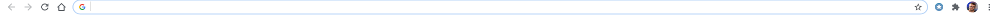
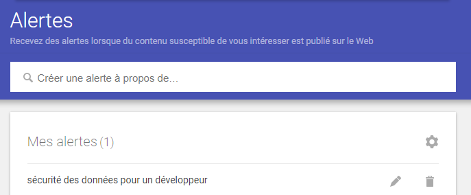

LA SÉCURITE DES DONNÉES WEB POUR UN DÉVELOPPEUR
La mise en place de la veille technologique
Video explicative sur le sujet
Le choix de mon sujet
La definition de la veille technologiques
Qu'est ce que la securite des donnees
Mes sources d'informations
La mise en place de ma veille technologique
La mise en place
- La veille technologique porte sur les innovations du secteur, les nouvelles techniques et nouveaux produits des concurrents.
Plusieurs critères permettent de surveiller les évolutions technologiques, les brevets déposés, les nouvelles normes, les nouveaux produits, les nouveaux processus de production et de prise en charge des clients.
- Methodologie de recherche :
La méthode pull (tirer l’information), permet de rechercher par soi-même (recherche sur internet, magazine, bibliothèque, séminaires…).
La méthode push (pousser l’information), permet à l’information de venir vers nous régulièrement et automatiquement.
pour la recherche des informations j’ai utilisé la plus par du temps la méthode
Push parce que c’est automatique mais aussi j’ai utilisé Pull pour des recherches rapides et plus générale
- Les points Forts de ma veille :
les informations sont quasiment tous utiles et de qualités
le flux d’information est très élevé
Facile d’utilisation et rapide d’accès
Bonne Organisation sur Pearltress
- Les points faibles de ma veille :
Trop d’informations , difficiles de tout lire et surtout trié (surtout avec Google Alert)
Beaucoup d’informations se ressemblent et sont identiques
- Il y a aussi moyen d’installer sur votre moteur de recherche une extension Pearltress qui permet d'ajouter automatiquement a notre pearltress le lien du site qui nous interesse

- Outils de recherche :
Google alerts comme méthode Push en utilisant le flux RSS je recois une alerte Google qui est un email envoyé par Google listant toutes les pages web qui ont mentionné le mot ou l’expression sur laquelle vous avez placé une alerte.
Moteur de recherche Google comme méthode pull pour des recherches rapides
- On peut y ajouter des sites ayants pour sujet le sujet choisi , on donne des images et des titres pour chaque sites intéressants qu’on rajoute à notre dossier de Veille . Tout est totalement personnalisable et simple d’utilisation .
- Voici une illustration de mon pearltress :
Hugocol
J’ai ensuite rajouté un autre système de veille , le « Google Alert » , c’est une alerte Google qui est un email envoyé par Google listant toutes les pages web qui ont mentionné le mot ou l’expression sur laquelle vous avez placé une alerte.

Pourquoi j'ai choisi ce sujet
- J'ai choisi de travailler sur ce sujet car de nos jours il est important de se tenir au
courant sur les failles de sécurités et les méthodes mises en place pour les éviter
De plus la technologie evolue de plus en plus vite et donc en tant qu'etudiant en informatique je me tiens au courant de l'actualite autour de ce sujet pour me preparer au futur
Definition de la veille technologique
-
La veille technologique ou veille scientifique et technique consiste à s’informer de façon systématique sur les techniques les plus récentes et surtout sur leur mise à disposition commerciale (ce qui constitue la différence entre la technique et la technologique).
Cette activité met en œuvre des techniques d’acquisition, de stockage et d’analyse d’informations et leur distribution automatique aux différentes sections concernées de l’entreprise, à la manière d’une revue de presse. Ces informations peuvent concerner une matière première, un produit, un composant, un procédé, l’état de l’art et l’évolution de l’environnement scientifique, technique, industriel ou commercial de l’entreprise.
Elle permet aux bureaux d’études d’être informés des baisses possibles de coût ou d’augmentation de qualité dans le cadre de l’analyse de la valeur. L’entité de production connaît mieux grâce à elle ses limites de production et sa concurrence future.
Télécharger l'image
Qu'est-ce que la sécurité des données ?
La sécurité des données concerne aussi bien les pratiques que la technologie permettant de protéger les données précieuses et sensibles des entreprises et des clients, telles que les informations personnelles ou financières.
Pensez aux données précieuses que votre entreprise recueille, stocke et gère. Les informations telles que les données financières ou de paiement, la propriété intellectuelle et les informations personnelles sensibles concernant vos employés et vos clients sont une véritable mine d'or pour les pirates informatiques. La sécurité des données, à savoir les processus et les technologies que vous devez utiliser pour protéger ces données, est un élément capital pour protéger la réputation et la santé financière de votre entreprise.
Pourquoi la sécurité des données est-elle importante ?
Les données que votre entreprise crée, collecte, stocke et échange constituent un actif précieux. En les protégeant contre la corruption et l'accès non autorisé par des personnes internes ou externes, vous protégez votre entreprise contre les pertes financières, les risques d'atteinte à sa réputation, mais aussi les risques de perte de confiance des consommateurs et de dégradation de la marque. Par ailleurs, la réglementation des pouvoirs publics et du secteur en matière de sécurité des données exige que votre entreprise assure la conformité à ces règles, quel que soit le lieu où vous exercez vos activités.
Introduction au sujet
- Il faut se méfier de nos données : tout protéger afin de ne pas se faire voler des
informations sensibles comme les données de notre carte bancaire ou encore des mots de passe
de site web la sécurité est une notion à prendre en compte dans notre futur puisque il y a
de plus en plus de failles de sécurité sur les applications web pour lutter contre ces
attaques il existe des outils permettant de contrôler la sécurité de nos applications
- La sécurité est indispensable pour apporter la confiance dans la gestion des données
personnelles des entreprises. D'ailleurs la CNIL propose 3 niveaux progressifs adaptés aux
moyens et aux besoins, une méthode et des outils pour nous mettre en conformité.
L’OWASP
- L’OWASP est un rapport régulièrement mis à jour qui expose les préoccupations en matière de sécurité des applications web, en se concentrant sur les risques les plus critiques. Le rapport est élaboré par une équipe d’experts en sécurité du monde entier. L’OWASP qualifie le Top 10 de « document de sensibilisation » et recommande à toutes les entreprises d’intégrer le rapport dans leurs processus afin de minimiser et/ou d’atténuer les risques de sécurité.
- 1) Attaques par Injection SQL
Elles se produisent lorsque des données non fiables sont envoyées à un interpréteur de code par le biais d’une saisie de formulaire ou d’une autre soumission de données à une application web. Par exemple, un attaquant pourrait entrer du code de base de données SQL dans un formulaire qui attend un nom d’utilisateur en clair. Si la saisie de ce formulaire n’est pas correctement sécurisée, le code SQL sera exécuté. C’est ce qu’on appelle une attaque par injection SQL.
Les attaques par injection peuvent être évitées en validant et/ou en assainissant les données soumises par les utilisateurs. (La validation signifie le rejet des données suspectes, tandis que l’assainissement consiste à nettoyer les parties suspectes des données). En outre, un administrateur de base de données peut définir des contrôles pour minimiser la quantité d’informations qu’une attaque par injection peut exposer.
- 2) Authentification frauduleuse
Les vulnérabilités des systèmes d’authentification (login) peuvent donner aux attaquants l’accès à des comptes d’utilisateurs et même la possibilité de compromettre un système entier en utilisant un compte d’administrateur. Par exemple, un attaquant peut prendre une liste contenant des milliers de combinaisons connues de noms d’utilisateur et de mots de passe obtenues lors d’une violation de données et utiliser un script pour essayer toutes ces combinaisons sur un système de connexion afin de voir si certaines fonctionnent.
Certaines stratégies visant à atténuer les vulnérabilités de l’authentification consistent à exiger une authentification à deux facteurs (2FA) ainsi qu’à limiter ou à retarder les tentatives de connexion répétées en utilisant la limitation du débit.
- 3) Exposition aux données sensibles
Si les applications web ne protègent pas les données sensibles telles que les informations financières et les mots de passe, les pirates peuvent accéder à ces données et les vendre à des fins malveillantes. Une méthode populaire pour voler des informations sensibles consiste à utiliser une attaque de type « man-in-the-middle« .
Le risque d’exposition aux données peut être minimisé en cryptant toutes les données sensibles et en désactivant la mise en cache* de toute information sensible. En outre, les développeurs d’applications web doivent veiller à ne pas stocker inutilement des données sensibles.
La mise en cache est la pratique qui consiste à stocker temporairement des données en vue de leur réutilisation. Par exemple, les navigateurs web mettent souvent en cache des pages web de sorte que si un utilisateur consulte à nouveau ces pages dans un délai déterminé, le navigateur n’a pas besoin de les récupérer sur le web.
- 4) Entités externes XML (XEE)
Il s’agit d’une attaque contre une application web qui analyse les entrées XML*. Cette entrée peut faire référence à une entité externe, en essayant d’exploiter une vulnérabilité dans l’analyseur. Une « entité externe » dans ce contexte fait référence à une unité de stockage, comme un disque dur. Un analyseur XML peut être trompé en envoyant des données à une entité externe non autorisée, qui peut transmettre des données sensibles directement à un attaquant.
Le meilleur moyen de prévenir les attaques XEE est de faire en sorte que les applications web acceptent un type de données moins complexe, comme JSON**, ou tout au moins de corriger les analyseurs XML et de désactiver l’utilisation d’entités externes dans une application XML.
*XML ou Extensible Markup Language est un langage de balisage destiné à être à la fois lisible par l’homme et par la machine. En raison de sa complexité et de ses vulnérabilités en matière de sécurité, il est en train d’être progressivement abandonné dans de nombreuses applications web.
**La notation d’objet JavaScript (JSON) est un type de notation simple, lisible par l’homme, souvent utilisée pour transmettre des données sur Internet. Bien qu’il ait été créé à l’origine pour JavaScript, JSON est un langage agnostique et peut être interprété par de nombreux langages de programmation différents.
- 5) Contrôle d’accès interrompu
Le contrôle d’accès désigne un système qui contrôle l’accès à des informations ou à des fonctionnalités. Les contrôles d’accès brisés permettent aux attaquants de contourner l’autorisation et d’effectuer des tâches comme s’ils étaient des utilisateurs privilégiés tels que les administrateurs. Par exemple, une application web pourrait permettre à un utilisateur de changer le compte auquel il est connecté en changeant simplement une partie d’une url, sans autre vérification.
Les contrôles d’accès peuvent être sécurisés en s’assurant qu’une application web utilise des jetons d’autorisation* et les soumet à des contrôles stricts.
*De nombreux services émettent des jetons d’autorisation lorsque les utilisateurs se connectent. Toute demande privilégiée faite par un utilisateur nécessitera la présence du jeton d’autorisation. C’est un moyen sûr de s’assurer que l’utilisateur est bien celui qu’il prétend être, sans avoir à entrer constamment ses identifiants de connexion.
- 6) Mauvaise configuration de la sécurité
La mauvaise configuration de la sécurité est la vulnérabilité la plus courante de la liste, et est souvent le résultat de l’utilisation de configurations par défaut ou de l’affichage d’erreurs excessivement verbeuses. Par exemple, une application peut présenter à l’utilisateur des erreurs trop descriptives qui peuvent révéler des vulnérabilités dans l’application. Il est possible d’atténuer ce problème en supprimant toutes les fonctionnalités inutilisées dans le code et en veillant à ce que les messages d’erreur soient plus généraux.
{kind=link}